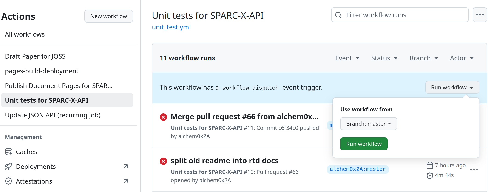
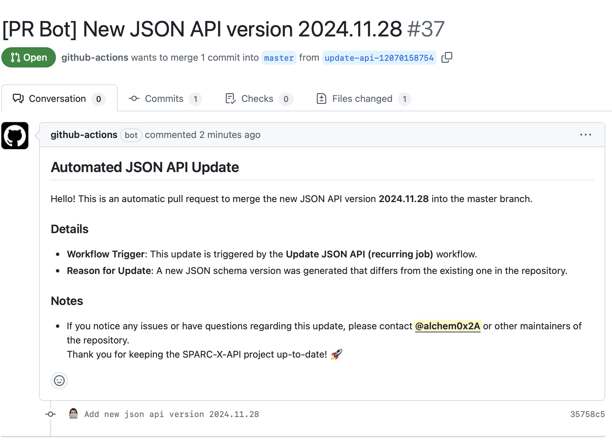

There are multiple branches required for the CI/CD workflow in
SPARC-X-API. Push / pull request to these branches should only be made by automatic github actions.
badges:
branch for maintaining the svg badges (package version, CI status,
etc.)
A list of svg badges can be found under badges/ directory of this
branch. See the development guide for how to add /
modify badges to be shown in the README.
gh_pages:
branch to publish the documentation site.
To allow pushed to the gh_pages branches to be automatically
deployed to the document pages, go to the pages
setting and
set the “Source” to “Deploy from a branch”, as well as “Branch” to
“gh_pages”, as shown in the UI screenshot below:
CI/CD pipelines in the SPARC-X-API repo are managed by Github
workflows, consisting of multiple “Actions”. Workflow configuration
YAML files are placed under .github/workflows/ and the workflow
status can be checked at the Actions
page. Please take a
look at the official documentation for
actions to get familiar with the syntax.
All workflows in the SPARC-X-API are designed to be able to run from
manual dispatch (with the workflow_dispatch enabled in the YAML
files) for debug purposes, from the “Run workflow” drop panel in the
actions
page, as
shown in the screenshot below:

Unit-test
workflow
includes several steps to run unit and coverage test.
The steps Createbadges and Manuallyaddgitbadges defines how
the status badges in README.md are created and pushed to the
badges branch.
When adding unit test examples involving real SPARC calculations,
do not use more than 4 MPI cores (may subject to changes) due to
the resource limitation
of hosted runners.
The rendered
changes will only be pushed to the gh_pages branch with direct
commit on the master branch or after one PR is merged.
Update JSON schema
workflow
updates the JSON schema file after a new release in SPARC C/C++
source code. The workflow is run both nightly and after normal
push. You can change the behavior as needed.
An example pull request created by the update workflow can be seen
in the following screenshot:

Once the
Publish PyPI
workflow
package the source as sparc-x-api and publish on PyPI. Only
activates on new releases.